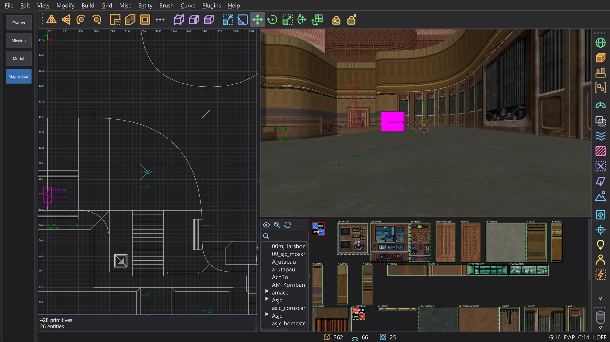
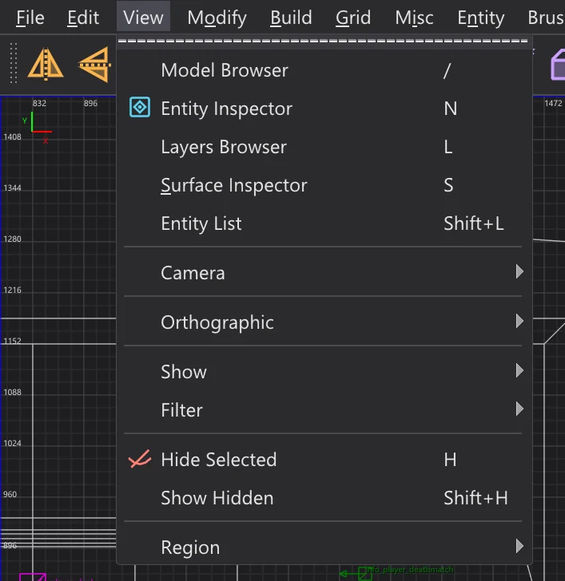
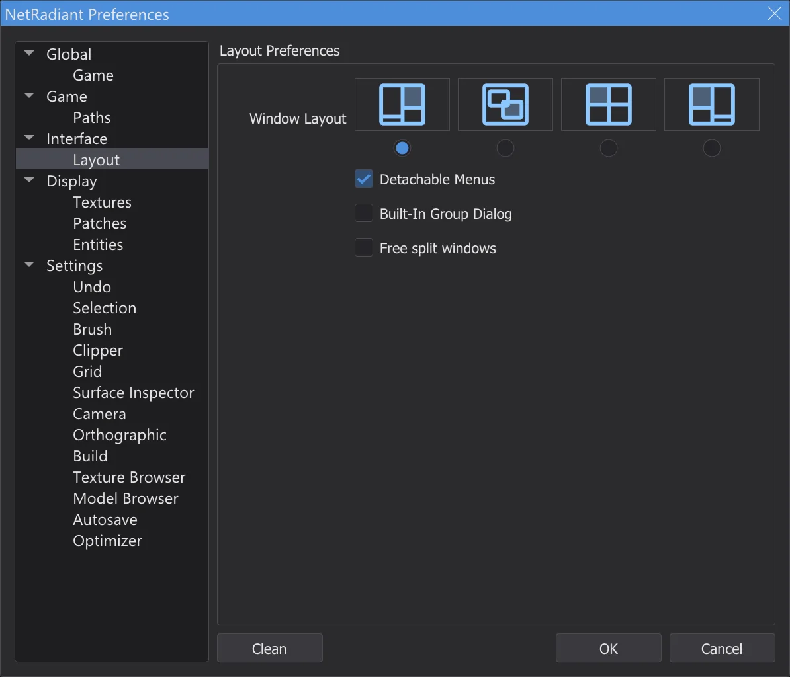
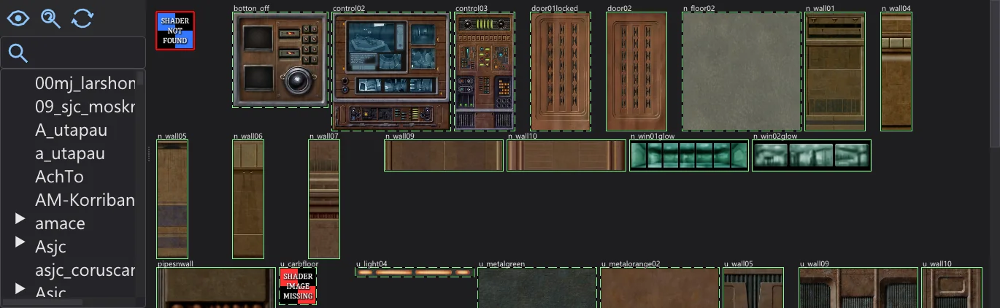
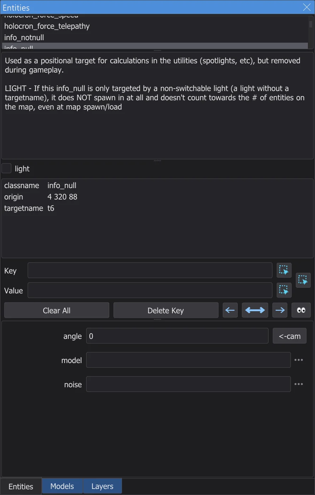
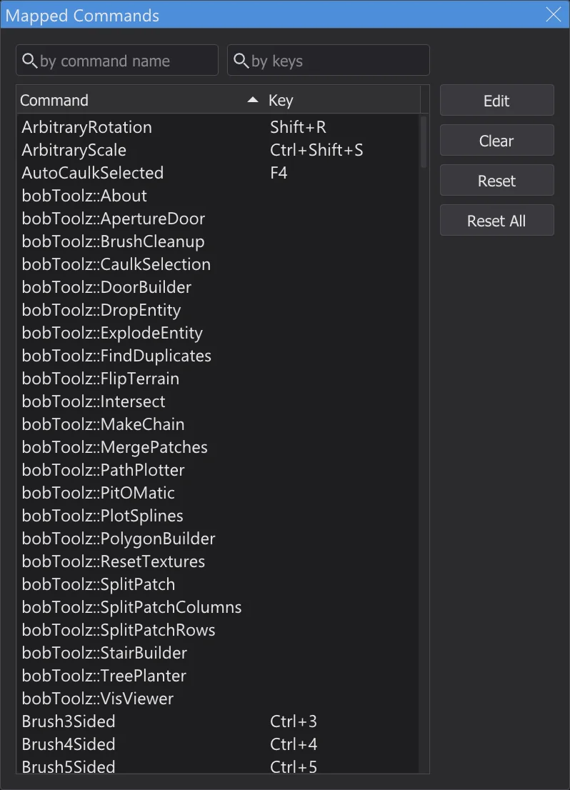

The map editor
Build and edit maps for Jedi Academy and Jedi Outcast - with the menus, windows and shortcuts of NetRadiant-Custom, so tutorials written for it work step by step.

Opening and saving maps#
Switch to Map Editor in the mode bar. The editor works with the game the program is set up for - Jedi Academy (also with Movie Duels) or Jedi Outcast - and its textures, shaders and entity definitions; the first time, it loads them in the background. Without game folders in the program settings there are no textures; under Preferences (pages Game and Paths) the map editor can also use another game and other folders. File > New Map starts an empty map, Open (Ctrl+O) opens a .map file, Open .bsp a compiled map of the game (page Map editor: opening and changing finished maps), Save (Ctrl+S) and Save as write it - like NetRadiant-Custom, the previous file is kept as .bak. The last maps you opened are at the bottom of the File menu. Before a map with unsaved changes is closed, the editor asks whether to save it.
Menus, windows and layouts#
Menus, toolbars and dialogs are laid out like NetRadiant-Custom (release 20260114): the same order, separators, shortcuts and mnemonics (Alt + the underlined letter). The labels are in the program language, the colours come from the program's colour scheme. The plugins are described on the page Map editor: plugins. The building tools are described on the page Map editor: building tools, compiling with q3map2 on Map editor: compiling the map.
In the map editor the program's menu bar becomes NetRadiant-Custom's menu bar (File ... Help): there is only one, the script tabs are hidden and the editor starts right below it. What the program needs here too is added at the end of two menus: Misc has Language, Color Scheme and Scaling, Help has Manual (F1, this guide) and About JK Studio; Check for NetRadiant update looks for a new version of this program. Leaving the mode in the mode bar brings back the program's menus and tabs.
Every window of the editor - the 2D views, the camera, the console and the texture browser - has a thin frame, so you can see where one ends and the next begins; between them sits NetRadiant-Custom's splitter with its grip dots. The active window - the one you clicked last - has its frame in the accent colour of the colour scheme, as NetRadiant-Custom outlines the active 2D view (View > Show > Show Window Outline switches that off for the 2D views). Drag a splitter to resize the windows; dragged to the edge, a window collapses and can be pulled out again.

Edit > Preferences (P) holds NetRadiant-Custom's preferences. On the page Layout you choose the window layout - Regular, Floating, Split or Regular Left - and whether the group dialog with entities and textures sits in the main window (Built-In Group Dialog). The new layout applies as soon as you press OK; NetRadiant-Custom needs a restart for that. In Floating the windows float inside the program window.

2D view and camera#
| Right mouse drag (2D) | Scroll the view |
| Wheel, Alt + right mouse drag (2D) | Zoom |
| Ctrl + Tab | Next 2D view (XY, XZ, YZ) |
| Middle mouse (2D) | Turn the camera towards the point; with Ctrl the camera moves there |
| Right click in the camera | Free look on and off: the mouse turns the view, W A S D or the arrow keys move |
| Arrow keys (camera) | Forward, back, turn; A / D sideways; the wheel moves forward and back |
| Tab | Camera onto the selection |
| Shift + [ / ] | How the camera draws (wireframe, flat, textured ...) |
| [ / ] | Grid smaller / larger; 1 ... 9 set it directly (1 to 256 units) |
Selecting and building#
| Left click | Select what is under the mouse; another click on the same spot selects what lies behind it |
| Shift + left mouse drag | Select (or deselect) everything the mouse passes over |
| Shift + right mouse drag | Select with a rectangle |
| Ctrl + left mouse (camera) | Select single faces |
| Left mouse drag on the selection | Move it; next to a selected brush: pull its faces to resize it |
| Left mouse drag in empty space (2D, nothing selected) | Draw a new brush with the current texture |
| Esc | Clear the selection |
| Space | Duplicate the selection |
| Delete | Delete the selection |
| Ctrl + Z | Undo |
| Ctrl + Shift + Z | Redo |
| Ctrl + C / V | Copy / paste |
| H | Hide the selection |
| Shift + H | Show everything hidden |
Textures#

The texture browser shows the textures and shaders of the game, folder by folder. In the layout Regular it sits below the camera; in the other layouts View > Texture Browser (T) opens it. A click on a texture makes it the current one and puts it on the selected brushes or faces; the middle mouse button only picks it. Right mouse drag scrolls, a right click opens the texture's menu. In the camera, the middle mouse button on a face picks up its texture; together with Ctrl or Shift it paints the current texture onto faces, as in NetRadiant-Custom.
Entities#

A right click in the 2D view (without moving the mouse) opens the entity menu: pick a class to place a new entity at that point. If brushes are selected and you pick a brush class such as func_door, the brushes become that entity. View > Entity Inspector (N) shows the selected entity: its class with the description, the spawnflags as check boxes, all keys and values, and fields for the keys the class knows. Type a key and a value and press Enter to set it. View > Entity List (Shift+L) lists all entities of the map. Entity > Connect Entities (Ctrl+K) links two selected entities with target and targetname.
Console#
The console (in the layout Regular below the 2D view, otherwise View > Console, O) shows the same messages as NetRadiant-Custom: what was loaded, warnings about missing textures and shaders, and how long loading and saving took.
Shortcuts#

The map editor has NetRadiant-Custom's shortcuts. They apply while the map editor is shown; the program's own shortcuts are off then. Edit > Shortcuts (Ctrl+Shift+P) lists every command with its key; the fields at the top search by command name or by keys. Double-click a command (or press Edit) and then the new key; Clear removes the key, Reset brings back NetRadiant-Custom's key, Reset All all of them. If the key already belongs to another command, the editor asks first.
[ and ] need AltGr (German: AltGr+8 / 9), they still work - [ and ] change the grid, and Shift+AltGr+8 / 9 count as Shift+[ / ]. But Ctrl+[ and Ctrl+] (Far Clip Plane In / Far Clip Plane Out) cannot be pressed, because AltGr already counts as Ctrl+Alt - exactly as in NetRadiant-Custom. Use the menu View > Camera, or give the commands CubicClipZoomIn and CubicClipZoomOut other keys in Mapped Commands.